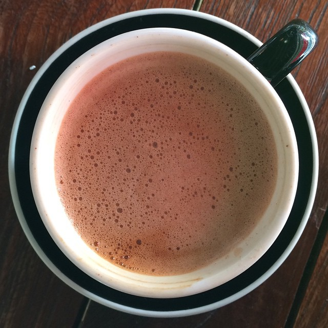

Mexican Mocha

Description
This delectable treat is a must have for someone who likes both sweet and spicy!!! I personally enjoy this in
the cooler months of Fall and Winter. Add this to your list, fellow coffee lovers! This is one of my easier recipes.
Ingredients
- 6 ounces strong coffee or two shots expresso
- 2 tbsp powdered sugar
- 1 tbsp unsweetened cocoa powder
- 1/4 tsp cinnamon
- 1/4 tsp nutmeg
- 1/8 tsp cayenne pepper
- 1-3 tbsp heavy cream or half & half
Steps
- Make your coffee or espresso and put it in your mug of choosing.
- Mix your dry ingredients in a small bowl or cup.
- Add dry ingredients to your drink and stir
- Stir in heavy cream to your taste. Enjoy!!
- BONUS: Add whip cream to top
Return to Recipes Index